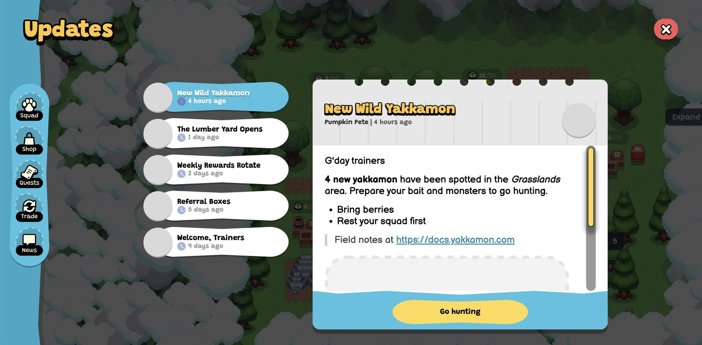
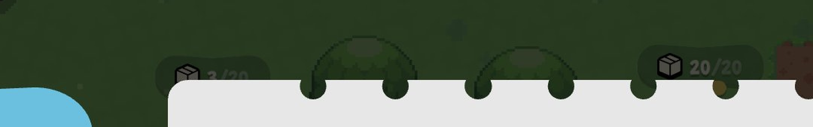

There is a storage bin sitting at 20/20 in Yakkamon's own screenshot — full, stopped, banking nothing, on a world the studio has been playing for over a week. It is the most useful thing in the image, and it is in the background behind the thing we were meant to be looking at.
Most Yakkamon reveals so far have been artifacts: a roster sheet, a mock-up of a HUD, a comparison table in the docs. Useful, but static. They tell you what the game will contain, not what it's like.
The Updates panel is different. It's a screenshot of a live world with a history — a news feed with five dated posts, a named author, working bin counters in the background, and a button that takes you straight into the activity being announced. It leaks more about how Yakkamon actually operates than anything since the dev streams.

Here's everything we can reasonably read from it, what it confirms, what it changes, and where we're still guessing.
1. There is a live-ops system, and it's been running for at least nine days
| Post | Age |
|---|---|
| New Wild Yakkamon | 4 hours ago |
| The Lumber Yard Opens | 1 day ago |
| Weekly Rewards Rotate | 2 days ago |
| Referral Boxes | 5 days ago |
| Welcome, Trainers | 9 days ago |
Two things follow. First, Yakkamon has an in-game news channel, not just a Discord and a docs site — announcements arrive where you're playing, authored and dated, with a call to action attached.
Second, and more interesting: “Welcome, Trainers” sitting at nine days old implies a world that has been up and accumulating events for at least that long. That's a build being lived in, not a demo assembled for a screenshot.
2. Hunting has an economy, and it isn't free
The open post is the most useful text Yakkamon has published about moment-to-moment play. Four new yakkamon have appeared in the Grasslands, and trainers are told to prepare bait and monsters, bring berries, and rest their squad first.
Unpack that and three separate mechanics fall out.
- Bait is a thing. Hunting isn't walk-up-and-catch. You bring something to attract or hold a creature, and berries appear to be it — or at least one form of it.
- Berries are a hunting consumable. We already knew the Hunting Area charged 5 berries to enter. That looked like a toll. It now looks more like ammunition: berries are what you spend to hunt at all.
- Your squad needs to be rested before you go. Stamina isn't only a gathering constraint. A tired squad is a squad that can't hunt, which means the idle half and the active half of the game compete for the same resource.
That last point is the one with teeth, and we'll come back to it.
3. Bins cap at 20, and at least one is sitting full
Look past the panel at the world behind it. Four storage counters are visible in the overworld, reading 3/20, 20/20, 0/20 and 0/20, with a lone 5 on a structure to the right.

This is the first time the bin cap has been visible in a live world rather than in a mock-up, and it confirms the number we'd been treating cautiously: 20 in the early game.
It also shows something we'd only argued theoretically. One of those bins is at 20/20 — full, stopped, banking nothing. In a screenshot presumably taken by someone from the studio, on a world they've been playing for over a week, a bin is sitting at max wasting production.
That's the whole storage bin argument in one number. Overflow isn't a hypothetical inefficiency for careless players. It's the default state of any bin you don't empty, and it happens to everyone.
4. Grasslands is the first named region
Every region we knew about was exotic: deserts, volcanoes, fire regions, oceans. Grasslands is new, and its name plus its role — the place where four new creatures are announced for general hunting, with berries as the stated cost — makes it look like the starter region.
That matters for a reason that isn't obvious. Type locking means each region's materials are gated to types. If Grasslands is the opening area, its type requirements are the ones every new trainer meets first, and the ones that shape which creatures are worth catching in week one.
We'd guess Grass types are well served there. That is a guess, and we're flagging it as one.
5. The menu has changed
Earlier screenshots showed six buttons: Squad, Items, Quests, Shop, Trade, Log. This one shows five: Squad, Shop, Quests, Trade, News.
So Log has become News, and Items has gone — most likely folded into the item bar along the bottom of the screen rather than deleted. Small, but it tells you the UI is still moving, which is a useful corrective to reading any screenshot as final.
6. The other four headlines each imply a system
- The Lumber Yard Opens — a named production building, and the word “opens” implies structures unlock over time rather than all being available from the start.
- Weekly Rewards Rotate — a weekly reward cycle already live. That's the strongest evidence yet for the team's stated consideration of weekly seasons rather than the quarterly cadence in the docs.
- Referral Boxes — referrals pay out as in-game boxes, connecting the pre-registration referral system to something you actually open at launch.
- Welcome, Trainers — the world's opening post.
And the author line reads Pumpkin Pete, a name Sunflower Land players will recognize. Whether that's a shared character, a studio pen name, or an in-world NPC voice, it's a deliberate thread back to the parent game.
What this changes about our own advice
We argued a few days ago that the opening week should be played breadth-first: catch widely before you catch well, because type locking means a narrow roster caps what you can produce at all.
We still think that's right. But this screenshot adds a cost to it that we didn't account for.
Going wide means hunting a lot. Hunting costs berries, and it costs squad stamina — and squad stamina is the same pool your gatherers draw from. So every hunting trip is paid for twice: once in consumables, once in production your monsters didn't do while they were out being tired.
A trainer who hunts constantly with no berry economy behind it will end week one with a broad roster, an empty larder and four bins at max. That's a worse position than a narrow roster that's actually producing. We'd rather revise this now than let the original stand unqualified.
What we still can't tell
- Whether bins upgrade past 20, and what it costs. A 120 cap has appeared in mock-ups; nothing here confirms it in a live build.
- What bait actually does. Berries are named, but whether bait improves catch rates, attracts specific species, or is simply an entry fee is unstated.
- How much stamina a hunt costs, or how long a rest takes. Without those, the trade-off above can't be quantified.
- Whether this is the launch world. Everything here could be an internal build with tuning that never ships.
- What the four new Grasslands yakkamon are. No names, no types, no images.
The honest summary
Nothing in this screenshot is a headline announcement. There's no date, no reward, no rule change. It's an interface with some numbers in the background.
But it's the first look at Yakkamon as a running system rather than a set of planned features — a world with a history, a news feed, an economy of consumables, and a bin quietly sitting full because someone forgot to empty it.
For a game whose early access window is November or December, a build that's been lived in for over a week is a better signal than any roadmap.